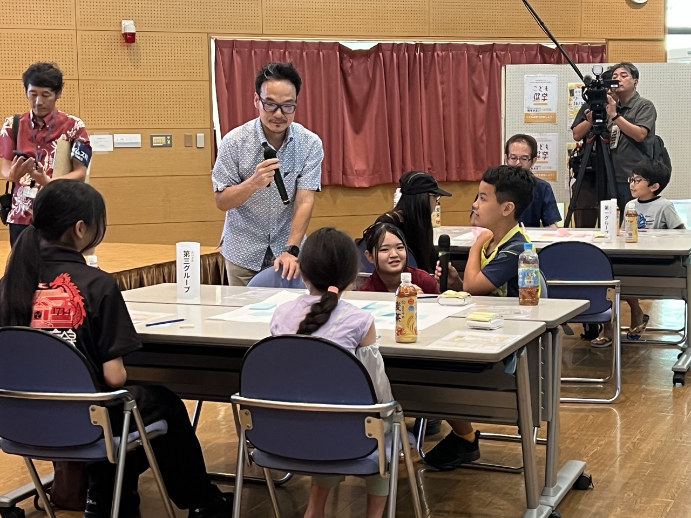
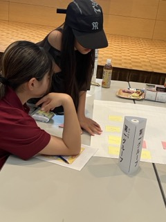

質問づくりワークショップを開催しました
7月25日、浦添市で、おきなわこども選挙の質問づくりワークショップを開催しました。


小学生から高校生まで10人が参加しました。はじめに子どもの権利と選挙について学び、絵本を使った模擬投票を体験しました。
沖縄の未来について聞きたいこと
後半は、沖縄県知事選挙の候補者へ届ける質問づくりです。「街のどこを変えたいですか？」「自分をどういう人だと思っていますか？」など、子どもたちならではの視点から、さまざまな質問が生まれました。
ここでまとまった質問は、すべての候補者へ同じ条件で届けます。回答動画は、告示後、準備ができ次第このサイトで公開します。